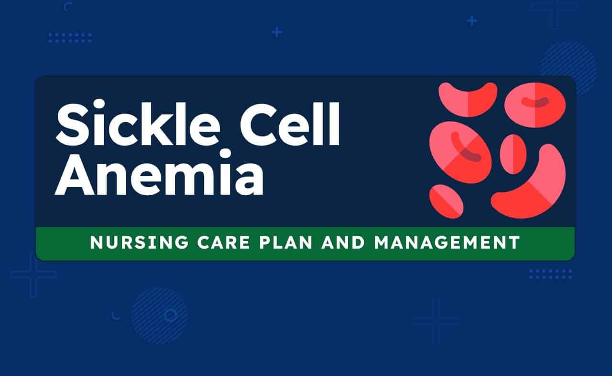

Stronger connections. Better care. Healthier lives.
Our platforms connects individuals living with Sickle Cell to the healthcare resources they need. It provides easy access to information on care, support services, and patient communities to help users manage their condition and stay informed about treatment options. Please note, this website is not a doctor and does not provide medical advice.
Raising awareness about sickle cell empowers and reduced stigma.

Explore treatment options, daily care, and lifestyle tips.